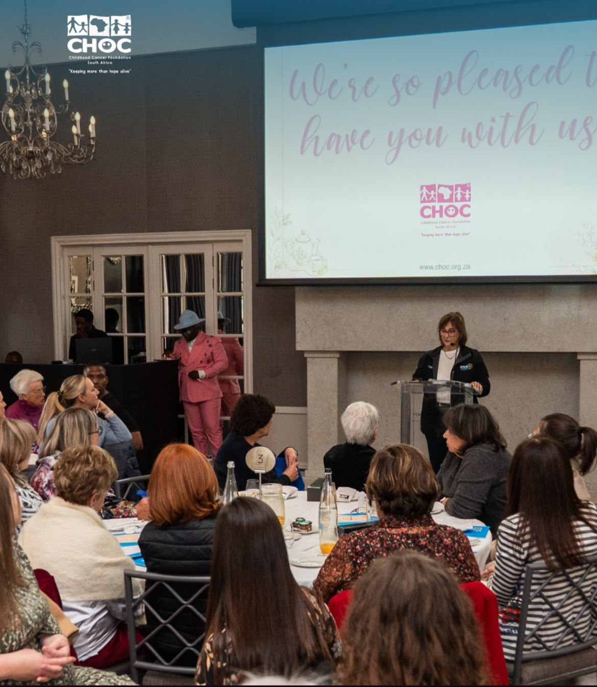

Who We Are
Organisation set up to help,support and raise money for those in needs

Our mission and vission
The mission is to create awareness of early warning signs as well as provide national support to all the children and teenagers who already have the sickness . Our vision is to a better world where a child with cancer or living with a disorder never walks alone .

Our Team
Without the team ,it would not be possible. every kid and parent have the needed support and education all because of this team. This team is able to put a smile on the face by the end of each section of learning.

Events
Events are hosted from time to time, to help teach people what the NGO is all about. CHOC is a place where children`s hopes are brought back. A place where parents are asured that all will be well.